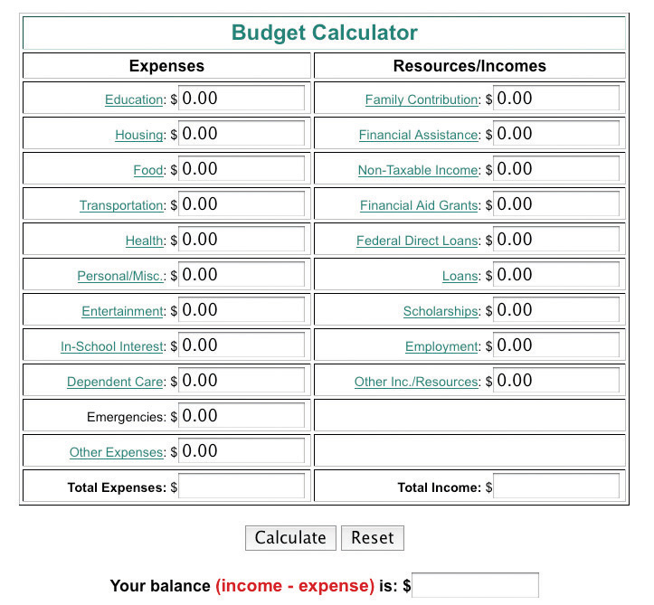

Most people aren’t really sure where a lot of their money goes. Take this survey to see how much you remember about how you have spent money recently.
Do your best to remember how much you have spent in the last thirty days in each of the following categories:
| Category | Amount in Dollars (Per Month) |
|---|---|
| Coffee, soft drinks, bottled water | |
| Newspapers, magazines | |
| Movies, music concerts, sports events, night life | |
| Fast food lunches, snacks, gum, candy, cookies, and so on | |
| Social dining out with friends (lunch, dinner) | |
| Music, DVDs, other personal entertainment | |
| Ringtones and mobile phone applications | |
| Bank account fees, ATM withdrawal fees | |
| Credit card finance charges | |
| Lottery tickets | |
| Cigarettes, smokeless tobacco | |
| Beer, wine, liquor purchased in stores | |
| Beer, wine, liquor purchased in restaurants and bars | |
| Gadgets, video or computer games, and so on | |
| Gifts | |
| Hobbies | |
| Travel, day trips | |
| Total: |
Now be honest with yourself: is this really all you spent on these items? Most of us forget small, daily kinds of purchases or underestimate how much we spend on them—especially when we pay with cash.
You’ll notice also that this list does not include essential spending for things like room and board or an apartment and groceries, utilities, college tuition and books, and so on. The greatest potential for cutting back on spending is in the area of optional things.
More people get into financial trouble because they’re spending too much than because they’re making (or receiving) too little. While spending may seem a simple matter—“I need to buy this, I’d like to buy that”—it’s actually very complex. America is a consumer society, and we’re deluged by advertisements promising that we’ll be happier, more successful, better liked by more people, sexier, and everything else if only we buy this. Companies have spent billions of dollars researching how to manipulate our buying behavior. No wonder it’s so tough to resist these pressures!
Why does a person feel compelled to buy fast food for lunch, or a new CD with a song they just heard on the radio, or a new video game a friend says is so good, or a new article of clothing? We owe it to ourselves to try to understand our own attitudes about money and spending. Here’s a good place to start:
Before you can make an effective budget, you need to look at what you’re spending money on now and consider what’s essential and what’s optional. Essential costs are the big things:
These things are sometimes called fixed costs, but that term can be misleading. If you have the option to move to a less expensive apartment that is smaller or a few blocks farther away, you can partly control that cost, so it’s not really “fixed.” Still, for most people, the real savings come from spending less on optional things.
Look back at the amounts you wrote in the earlier exercise “Where Does the Money Go?” These things are “optional” expenses—you can spend more or less on them as you choose. Most people spend by habit, not really thinking about where their money goes or how quickly their spending adds up. If you knew you were spending more than a thousand dollars a year on coffee you buy every day between classes, would that make you think twice? Or another thousand on fast food lunches rather than taking a couple minutes in the morning to make your lunch? When people actually start paying attention to where their money goes, most are shocked to see how the totals grow. If you can save a few thousand dollars a year by cutting back on just the little things, how far would that go to making you feel much better about your finances?
Following are some general principles for learning to spend less. The “Tips for Success” then lists specific ways you can try to follow these principles in your daily life. Remember, spending money doesn’t define who you are!
Budgeting involves analyzing your income and expenses so you can see where your money is going and making adjustments when needed to avoid debt. At first budgeting can seem complex or time consuming, but once you’ve gone through the basics, you’ll find it easy and a very valuable tool for controlling your personal finances.
Why create and manage a budget? Going to college changes your financial situation. There are many new expenses, and you likely don’t know yet how your spending needs and habits will work out over the long term. Without a budget, it’s just human nature to spend more than you have coming in, as evidenced by the fact that most Americans today are in debt. Debt is a major reason many students drop out of college. So it’s worth it to go to the trouble to create and manage a budget.
Managing a budget involves three steps:
Many college students receive money or financial assistance from a number of sources. To track income in a monthly budget, consider all your sources of funds and convert them to a monthly number. For example, you may receive a student loan once during the year or you may work more in the summer and save up money then. To calculate your monthly projected income, add up your income sources and divide that number by the number of months you will be using the income. For example, if you have saved $4,800 that you can spend over two years of college, divide the $4,800 by twenty-four months to arrive at a monthly income of $200 from those savings. Do the same with scholarship grants, student loans, monetary gifts, and so on.
If some of your college costs are being paid directly by parents or others, do not include that money in your budget as either income or an expense. Base your monthly budget on just those funds and expenses that involve you directly.
Use Table 11.1 "Monthly Income and Funds" to record and total all your income on a monthly basis. If you must estimate some sources, estimate low rather than high; it’s a bad trap to assume you’ll have more money coming in than you actually do—that’s a real budget buster.
Table 11.1 Monthly Income and Funds
| Source of Income/Funds | Amount in Dollars |
|---|---|
| Job income/salary (take-home amount) | |
| Funds from parents/family/others | |
| Monthly draw from savings | |
| Monthly draw from financial aid | |
| Monthly draw from student/other loans | |
| Other income source: ________________ | |
| Other income source: ________________ | |
| Other income source: ________________ | |
| Total Monthly Incoming: |
Tracking expenditures is more difficult than tracking income. Some fixed expenses (tuition, rent, etc.) you should already know, but until you’ve actually written down everything you spend in a typical month, it’s hard to estimate how much you’re really spending on cups of coffee or smoothies between class, groceries, entertainment, and the like. The best way to itemize this side of your budget is to write down everything you spend—everything, every bottle of water and cookie, coins into parking meters, and so forth—for a full month. Then you can total up the different categories of expenses more realistically. We urge you to immediately start writing everything down in a small notebook you carry with you. You may be astonished how small purchases add up.
While you’re writing this down for a month, go ahead and work through the expenditure half of your budget, using Table 11.2 "Monthly Expenditures". Set aside an hour or two to look through your past financial records, checkbook register and debit cardA card like a credit card that functions like a check and through which a purchase or cash withdrawal from an automated teller machine (ATM) is made directly from the holder’s bank account. transactions, past utility bills, credit card statements, and so on to get the numbers to put in your expenses budget. Make estimates when you have to, but be honest with yourself and don’t underestimate your usual spending. There will be plenty of time down the road to adjust your budget—but don’t start out with an unrealistic plan. Write “est” (for estimated”) next to numbers in your budget that you’re guessing at.
Once you have listed your routine expenditures using Table 11.2 "Monthly Expenditures", write out your own budget categories that fit how you actually spend money. Everyone is unique, and you want your budget to be easy to use for your own life and habits.
As noted previously with income, if some of your expenses are paid directly by others, do not include them here. Base your monthly budget on just those funds and expenses that involve you directly.
Table 11.2 Monthly Expenditures
| Expenditures | Amount in Dollars |
|---|---|
| Tuition and fees (1/12 of annual) | |
| Textbooks and supplies (1/12 of annual) | |
| Housing: monthly mortgage, rent, or room and board | |
| Home repairs | |
| Renter’s insurance | |
| Property tax | |
| Average monthly utilities (electricity, water, gas, oil) | |
| Optional utilities (cell phone, Internet service, cable television) | |
| Dependent care, babysitting | |
| Child support, alimony | |
| Groceries | |
| Meals and snacks out (including coffee, water, etc.) | |
| Personal expenses (toiletries, cosmetics, haircuts, etc.) | |
| Auto expenses (payments, gas, tolls) plus 1/12 of annual insurance premium—or public transportation costs | |
| Loan repayments, credit card pay-off payments | |
| Health insurance (1/12 of annual) | |
| Prescriptions, medical expenses | |
| Entertainment (movies, concerts, nightlife, sporting events, purchases of CDs, DVDs, video games, etc.) | |
| Bank account fees, ATM withdrawal fees, credit card finance charges | |
| Newspapers, magazines, subscriptions | |
| Travel, day trips | |
| Cigarettes, smokeless tobacco | |
| Beer, wine, liquor | |
| Gifts | |
| Hobbies | |
| Major purchases (computer, home furnishings) (1/12 of annual) | |
| Clothing, dry cleaning | |
| Memberships (health clubs, etc.) | |
| Pet food, veterinary bills, and so on | |
| Other expenditure: | |
| Other expenditure: | |
| Other expenditure: | |
| Other expenditure: | |
| Other expenditure: | |
| Total Monthly Outgoing: |
Now comes the moment of truth: compare your total monthly incoming with your total monthly outgoing. How balanced is your budget at this point? Remember that you estimated some of your expenditures. You can’t know for sure until you actually track your expenses for at least a month and have real numbers to work with.
What if your spending total is higher than your income total? The first step is to make your budget work on paper. Go back through your expenditure list and see where you can cut. Remember, college students shouldn’t try to live like working professionals. Maybe you are used to a nice haircut every month or two—but maybe you can go to a cheaper place or cut it yourself. There are dozens of ways to spend less, as suggested earlier. The essential first step is to make your budget balance on paper.
Then your job is to live within the budget. It’s normal to have to make adjustments at first. Just be sure to keep the overall budget balanced as you make adjustments. For example, if you find you must spend more for textbooks, you may decide you can spend less on eating out—and subtract the amount from that category that you add to the textbook category. Get in the habit of thinking this way instead of reaching for a credit card when you don’t have enough in your budget for something you want or need.
Don’t be surprised if it takes several months to make the budget process work. Be flexible, but stay committed to the process and don’t give up because it feels like to too much work to keep track of your money. Without a budget, you may have difficulty reaching your larger goal: taking control of your life while in college.
If you are good at Excel or another spreadsheet program, you can create your own budget in a spreadsheet that allows you to monitor your income and expenditures month to month, with the calculations done for you. Other budget calculators can be found online. Figure 11.3 "Simple Online Budget Calculator" shows a simple online budget calculator. The categories are general, but you can add up your numbers from Table 11.2 "Monthly Expenditures" in these categories and enter them in the online budget form, which then does the calculations for you.
Figure 11.3 Simple Online Budget CalculatorFederal Student Aid, “Budget Calculator,” Federal Student Aid Direct Loans, http://www.ed.gov/offices/OSFAP/DirectLoan/BudgetCalc/budget.html (accessed July 13, 2010).
Most college students can do well with a simple budget that helps you track monthly income and expenditures so that you can make adjustments as needed. If your financial life is more complicated or you would enjoy full financial tracking and control using your computer, a software program like Quicken has all the power you need and can download your banking and credit card records to easily track categories of expenses over time. A free online budget and tracking system is available at Mint.com.
Your budget may be unbalanced by a small amount that you can correct by reducing spending, or it may have a serious imbalance. If your best efforts fail to cut your expenditures to match your income, you may have a more serious problem, unless you plan in advance to manage this with student loans or other funds.
First, think about how this situation occurred. When you decided to go to college, how did you plan to finance it? Were you off in your calculations of what it would cost, or did you just hope for the best? Are you still committed to finding a way to continue in college?
If you are motivated to reach your college goal, good! Now look closely at your budget to determine what’s needed. If you can’t solve the budget shortfall by cutting back on “optional” expenses, then you need more dramatic changes. Are you paying a high rent because your apartment is spacious or near campus? Can you move a little farther away and get by temporarily in a smaller place, if the difference in rent makes a big difference in your overall finances? If you’re spending a lot on your car, can you sell it and get by with public transportation for a year or two? Play with the numbers for such items in your budget and see how you can cut expenses to stay in college without getting deeply in debt. If you worry you won’t be as happy if you change your lifestyle, remember that money problems are a key source of stress for many college students and that stress affects your happiness as well as how well you do in college. It’s worth the effort to work on your budget and prevent this stress.
If all else fails, see a financial aid counselor at your college. Don’t wait until you’re in real financial trouble before talking to someone who may be able to offer help.
People often don’t admit to themselves that they have a problem until it becomes unmanageable. We human beings are very good at rationalizing and making excuses to ourselves! Here are some warning signs of sliding into financial trouble:
If you are experiencing any of these warning signs, first acknowledge the problem. It’s not going to solve itself—you need to take active steps before it gets worse and affects your college career.
Second, if you just cannot budget your balance, admit that you need help. There’s no shame in that. Start with your college counselor or the financial aid office; if they can’t help you directly, they can refer you to someone who can. Take your budget and other financial records with you so that they can see what’s really involved. Remember that they’re there to help—their goal is to ensure you succeed in college.
Lots of people don’t balance their checkbook every month, thinking it’s just too much trouble. But it’s important to keep your checkbook balanced for several reasons:
If you’re not sure how exactly to balance your checkbook, ask a teller at your bank or get instructions online. This takes only a few minutes each month and is well worth it to avoid the stress and lost hours caused by an inevitable problem.
If you’re having problems just getting by on your budget, it may seem pointless to even think about saving for the future. Still, if you can possibly put aside some money every month into a savings plan, it’s worth the effort:
Start by saving in a savings account at your bank or credit unionA cooperative association that offers banking services to employees and often students at a particular college, possibly at rates more competitive than a private bank.. You can have a certain amount transferred from your checking account every month into a savings account—that makes it easier and more routine. A savings account allows withdrawal anytime but pays lower interest than other accounts. Ask at your bank about money marketA specific type of investment and spending account offered at many banks that may pay a higher interest rate. accounts and certificates of deposit (CDs)A bank deposit, usually made for a fixed term, at a specified interest rate that is typically higher than the rate of a regular savings account, involving a penalty for early withdrawal., which generally pay higher interest but have restrictions on minimum balances and withdrawals. Savings bonds are another option. All of these options are federally insured, so your money stays safe. Risky investments like the stock market are generally not appropriate for college students on a budget.
List the top three optional expenditures you usually make every week.
__________________________________________________________________
__________________________________________________________________
__________________________________________________________________
List three tips for spending less that you feel you will be able to use routinely to avoid running out of money while in college.
__________________________________________________________________
__________________________________________________________________
__________________________________________________________________
For each of the following statements, circle T for true or F for false:
| T | F | It’s OK to miss a deadline for paying your phone bill as long as you pay on time at least half of the time. |
| T | F | There’s really nothing wrong with not having any money in the bank as long as you have a credit card for emergencies and major purchases. |
| T | F | You should balance your checkbook every month when you receive your bank statement. |
| T | F | A good way to save money is to try to get by without buying expensive textbooks. |
| T | F | You only need to write up a budget if you’ve gotten deeply into debt and need to see a financial advisor to get out of debt. |